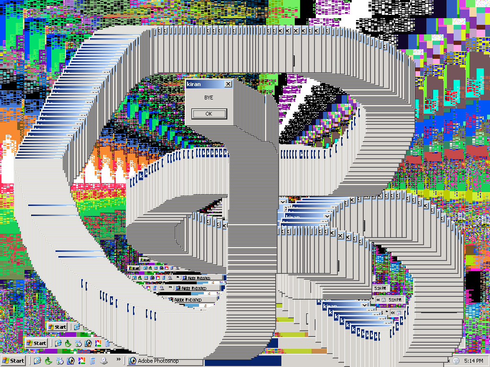

Description: Desktop defacing and display malfuinction emulation software for Windows OS.
Downloads: USE_ME.ZIP Size: 48Kb
Source code here. Size: 2.66Mb Coded by: Amita Jain, Cherry George Mathew and Kiran Subbaiah. Date of release: D:15/M:09/Y:2004 Last up date: D:15/M:09/Y:2004 Proprietary status:Copyleft Produced at: Mahiti Infotech, Bangalore. Funded by: Rijksakademie van Beeldende Kunsten, Amsterdam.
PLAGIARIZING JODI. A text-chat session between Cherry G Mathew and Kiran Subbaiah that took place while USE_ME was being coded. Use_Me.EXE is based on an work called "MY%20DESKTOP" by JODI.
Video Documentation:
Run on Win 10 OS
Run on Win XP OS
ScreenShots: 